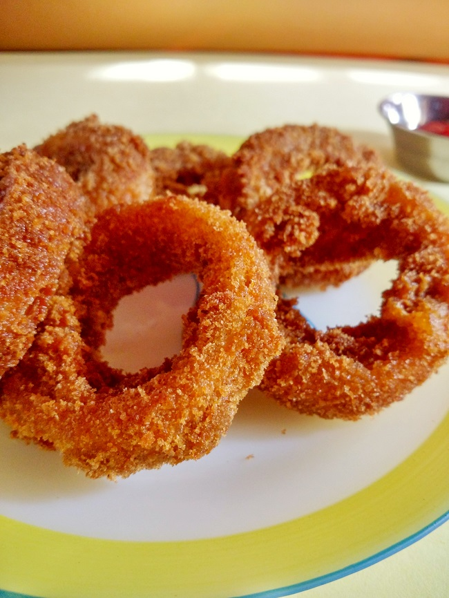

Spicy Onion Rings 🤤

Description
Mouthwatering, crispy spicy onion rings, with a sauce of choice that perfectly accompanies that spicy crunch.
Ingredients
- 1 onion
- 1 tsp red chili powder (or chili powder of choice)
- 0.5 tsp ginger-garlic powder
- 0.5 tsp salt
- 1 tbsp baking powder
- 0.5 cup all-purpose flour
- 1 egg
- 0.5 cup buttermilk
- Breadcrumbs (optional)
- Oil for frying
Steps
- Cut your onion(s) into 5-7 mm slices, separating the rings from each other.
- Setup your seasoning/breading station: Combine all dry ingredients, but save some baking powder and flour.
- Setup your batter station: whisk an egg, pour in your buttermilk, and put in the remaining baking powder and flour. Combine.
- Coat your onion slices well in the dry mixture, then dip them in the batter. Gently shake off any excess.
- Here is the key: put your already-coated onion slice BACK in the dry mixture, essentially double-coating it.
- Heat your oil in a pot of choice over a medium flame. Once it's around 365 F (should be bubbling), SLOWLY work your rings in from the surface, spinning them around a bit in the oil and then releasing.
- After about 3-4 minutes, your onion rings should be golden-brown. Go ahead and take them out, drying off the excess oil with a paper towel.
- Serve with a sauce of choice, my favorite with these is chipotle mayo. Enjoy!